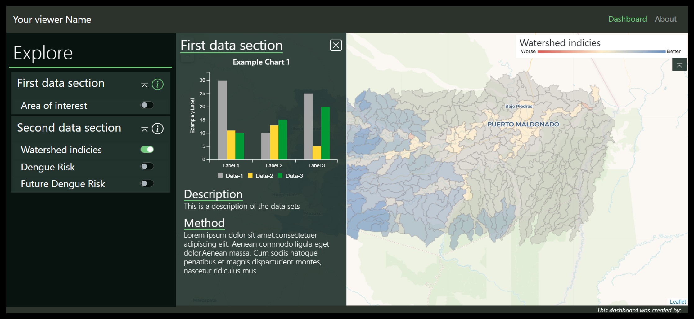

Natural Capital Data Viz

Myanmar's Natural Capital
Myanmar's Natural Capital website presents interactively an assessment led by World Wide Fund for Nature, at the request of the Government of Myanmar, will help Myanmar make those connections. The assessment includes information about where the country’s natural capital is located, what ecosystem services it provides to people, and how those services will change under different climate change and development scenarios. See Explore Ecosystem Services for interactive maps of Myanmar's natural assets—land, water, soil, plants, wildlife and air—that provides benefits to people.
Nature's Contributions to People, worldwide
As part of UN's IPBES Global Assessment, we mapped key ecosystem services worldwide at a fine resolution, under future scenarios (Chaplin-Kramer, in press). Where does nature contributes to people the most today, and where will people be most at risk in the future? This interactive viewer helps to explore these dense maps and facilitates comparisons across different regions, services, scenarios. Informing science-based policies, with the right maps in the right hands! By Charlotte Weil, Anna Hääg & team

Natural Resilience in the Amazon
The PRO Agua project (Proyecto Resiliencia y Ordenamiento Territorial del Agua) takes place in the tri-national area where Bolivia, Brazil and Peru meet and where watersheds are affected by floods, and pollution from illegal mining. This collaborative endeavour ambitions to demonstrate the benefits of ecosystem services and integrated watershed management for the health and well-being of the growing population. [¡En Español!] By Charlotte Weil & team

NatCap Training Program
NatCap offers a wide range of courses to help people learn about approaches and tools to use ecosystem services to inform decisions. Including on-line course, webinars, regional workshops, hands-on practice and tools in remote courses and seminars, customized workshops, and a the “training track” at the Natural Capital Symposium. Learn more! By D. Tekin & team

Green Growth That Works
This book provides detailed examples of Natural Capital Policy and Finance Mechanisms around the World. By Charlotte Weil, Gunes Yurdakul & Cyril Van Schreven
EcoParis: Ecosystem Services in Paris
EcoParis is an interactive visualization of map data of ecosystem services in urban and peri-urban areas in the Ile-de-France region from the IDEFESE project. By A. Ferragni, K. Sinnathamby, R. Liautaud
InVEST Viewer: HRA Model
Prototyping the next phase of NatCap's Platform, this dashboard supports visualizing InVEST Habitat Risk Assessment results. It is intended to give users a quick glance on how much risk do stressors cause to the habitats, and what are the areas of high, medium or low risks. More about InVEST HRA model. By Joanna Lin
InVEST Viewer: Coastal Vulnerability
Another of the InVEST Dashboards automating common synthesis and visualization tasks that may be necessary after using InVEST, specifically for the Coastal Vulnerability model, differentiating at a glance areas with relatively high or low exposure to erosion and inundation during storms. More about InVEST CV model. By Dave Fisher
InVEST Viewer: Seasonal Water Yield
Still at a prototype stage, this proposed InVEST dashboards explores Seasonal Water Yield model results, focusing on Baseflow and Quickflow, in Myanmar. More about InVEST SWY model. By Fengyu Cai & team
NatCap's Rangelands model
The Rangelands Dashboards displays sample outputs of NatCap’s Rangeland Production Model, in the Gobi desert, Mongolia. By Ginger Kowal
Mapping the world's free flowing rivers
Understanding the many factors impacting river ecosystems is crucial to understand which rivers should be prioritized for conservation or restoration (Read more). This website provides a visualization for the status and pressures on the world’s river from Grill et al. (2019) Mapping the world's free-flowing rivers.

Multi-Objective Optimization Viewer
The Upper-Tana Nairobi Water Fund has a triple objective: to maximize water yield, minimize sediment export and soil erosion. This dahsboard helps understanding the trade-offs - a key to a optimize between competing objectives. By Charlotte Weil
US Endangered Species Map
This National Geographic’s interactive map highlights lesser-known endangered species across America. By Soren Walljasper
Future Food Demand
Interactive Infogrpahics of global future food demand scenarios for the 21st century. By Kai Schefferski
Climate Impact Map
* This map shows historical and projected temperature data. By Climate Impact Lab
Coastline Retreat From Sea-Rise
This interactive simulation shows the retreat of the Southwestern portion of the Greenland ice sheet over the last 12,000 years. By NASA Virtual Earth System Laboratory
Greenland Ice Retreat Simulation
This interactive simulation ties grounded ice loss in Antarctica and Greenland to coastline retreat in Florida, the Gulf Coast, and California. By NASA Virtual Earth System Laboratory

Belize Coastal Mgm't Portal
This map portal displays Belize's Integrated Coastal Management Plan. By Gregg Verutes
Sustainable Development in Caracol, Belize
In the Caracol-Chiquibul-Mountain Pine Ridge (CMCC) region of Belize, improvement of the road to Caracol are expected, with potential benefits and concerns. Proactive planning had led to conduct state-of-the-art ecosystem services mapping and analysis. By NatCap CMCC Team
Digital Observatory for Protected Areas (DOPA) Explorer 4
Welcome to DOPA Explorer, the Joint Research Centre’s web based information system on the world's protected areas, which helps the European Commission and other users to assess the state of and the pressure on protected areas at multiple scales. By the Joint Research Centre of the European Commission
Marine Planning Concierge
The NatCap Marine Planning Concierge is designed to make it easier to learn about, get inspired by, and implement marine spatial planning. It builds upon coastal InVEST models and other NatCap's marine tools. By Gregg Verutes
Bahamas Hazard Viewer
This interactive dashboard displays InVEST Costal Vulnerability model results, in the Bahamas. Learn more! By Gregg Verutes
Virtual Reality Journey in the Amazon
Awavena tells a story of nature and its cultural and spiritual benefits featuring the Yawanawa people who have protected 200,000 hectares of rainforest from mining and destruction. This immersive experience integrates the role that plants play in the identity and cultural heritage of indigenous people. The data displayed in the movie was collected and modeled from Lidar and 3D imaging technologies. By Lynette Wallworth in collaboration with the Yawanawa people
Intuitively sensed Natural Capital
Californian wildfires in 2018 were the deadliest and most destructive on record, with a total of 8,527 fires burning an area of 1,893,913 acres (766,439 ha). Digital artist Stephen Standridge created this piece from the forest, right the fires erupted, sensing the dryness... By Stephen Standridge
Ocean Acification in Virtual Reality
Using latest Virtual Reality technology, Stanford researchers have produced a virtual underwater ecosystem to allow you to observe firsthand what coral reefs are expected to look like by the end of the century if we do not curb our CO2 emissions. By Anna Muller & team
Trade-Offs Curves Dashboard
This simple dashboard displays trade-offs curves and the corresponding land use management maps, for 2 specific landscapes optimized for 3 specific ecosystem services. By Peter Hawthorne
Watershed Conservation Screening Tool
This simple tool will quickly measure the potential for five common watershed conservation activities to reduce sediment and nutrient pollution in a source watershed.

Coastal Defense App
One of TNC's Coastal Resilience apps, the Coastal Defense app examines how coastal habitats such as oyster reefs, coral reefs, tidal marshes, mangroves, beach dunes, and seagrass help protect coastal areas by reducing wave energy hitting the shore. This app is being used in Southeast Florida and Gulf of Mexico. By The Nature Conservancy
Spatial Priotization Viewer in Python
This tools allows users to see how they could combine multiple ecosystem services into a single indicator via specifying different "weights" for each ecosystem service. It also illustrates a working example that implements how to do raster math on the client side within an html/js file. More information By Justin Johnson

Resource Watch
Resource Watch features hundreds of data sets all in one place on the state of the planet’s resources and citizens. Users can visualize challenges facing people and the planet, from climate change to poverty, water risk to state instability, air pollution to human migration, and more. By WRI
Partnership for Resilience and Preparedness (PREP) explorer
PREPdata is a map-based, open data online platform that allows users to access and visualize spatial data reflecting past and future climate, as well as the physical and socioeconomic landscape for climate adaptation and resilience planning. The platform is continuing to evolve through the input of PREP partners and PREPdata users. It is a flexible tool for climate adaptation planning, designed to address many of the gaps and challenges adaptation practitioners face. By PREP
Ocean Report
Draw a custom area anywhere in U.S. waters or pick from a predefined list of locations to get instant custom reports. Reports include descriptive infographics and supporting data that can be used for offshore planning, permitting, environmental review, public relations, and more. New features allow printing by industry, sharing, and adding custom coordinates. By A BOEM/NOAA PARTNERSHIP
Food Systems Dashboard
The Food Systems Dashboard combines data from multiple sources to give users a complete view of food systems. Users can compare components of food systems across countries and regions. They can also identify and prioritize ways to sustainably improve diets and nutrition in their food systems. By Johns Hopkins University and The Global Alliance for Improved Nutrition
Beescape
Get a bee's eye view of your landscape - This tool will help you understand how the landscape surrounding managed honey bee hives placed in an apiary, garden, or farm stacks up in terms of floral resources bees can find, the insecticides they encounter, and for wild bees, the nesting sites that are available. Work led by Eric Lonsdorf.
Pollination Mapper (Beta)
This interactive decision support tool to help inform grower’s choice of pollination strategies for their specialty crop farms in the US. It allows you to select your farm, try different approaches to pollination, compare and save the results. Set up a user profile to return to your session in the future and try new strategies. By the Integrated Crop Pollination Project. Work led by Eric Lonsdorf, Taylor Ricketts, with software developers at Azavea.

Your favorite visualization
Email us @ chweil@stanford.edu to have your project featured! By you
Gobi Training Viewer
Bringing Natural Capital Knowledge to Mongolia’s Gobi Steppe This four-day virtual event will introduce participants to the Natural Capital Approach and give teams of participants hands-on experience with three ecosystem services models. By NatCap
Viewer Template
Create a custom viewer with your own data easily
Requires only basic coding understanding, and a github account.
Toolbox for Natural Capital Data Visualization
This guidance document aims to support ES analysts striving to effectively communicate natural capital information, specifically to synthesize and visualize complex ecosystem services model outputs. It proposes approaches to ES visualizations and summaries in the form of a toolbox tailored to the specific needs of ES analysts, supported by fundamental and applied data visualization guidelines.
Effective data visualization are highly context-specific, thus there is no "one-size-fits-all"; the toolbox suggests a variety a display strategies and examples. Remember to tailor to the targeted audience and their level of expertise and familiarity with the context, the goal of the display, the time and type of media. For a quick answer to a specific display need, table 3.5.2 summarizes the relevant options for the main display tasks
Are interactive viewers useful for decision-making?
This paper presents an investigation of the usefulness of map-based dashboards and how these can be built to support science-based spatial planning. It includes a comparison of 21 dashboards in addition to an in-depth case study evaluating a dashboard using an insight-based methodology. The results suggest that useful dashboards have pre-defined clear goals and are customized to their targeted audience. Tailored summary charts and data overviews guide users through the data and encourage them to go from data to action. Furthermore, a list of guidelines, e.g. work iteratively and define audience and goals, to support analysts creating dashboards for decision-making is provided.